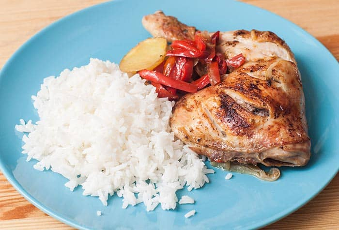

Baked Chiken

Description
Traditional dish of Italian cuisine that is prepared with superimposed sheets of pasta, filled with some sauce that usually contains meat and cheese.
The type of pasta made in the form of wavy sheets that is used to prepare lasagna1.
Ingredients
- 1 tablespoon olive or vegetable oil
- 1 large onion, chopped
- 1 garlic clove, peeled, finely minced or passed through a garlic chopper/presser
- 2 medium zucchini (Italian), ends trimmed, cubed
- 1 teaspoon dried basil or oregano
- 1 (28-ounce) can diced tomatoes, including liquid
- 1 ½ cups of water
- 2 cups fresh spinach leaves, roughly chopped
- 8 lasagna sheets (that do not have to be boiled first) cut in half
- ¼ cup ricotta cheese
- ¼ cup grated Parmesan cheese
- ¼ cup shredded mozzarella or Monterey Jack cheese
- ½ cup chopped fresh basil leaves
Instructions
- To prepare the sauce: Place the skillet on the stove and turn the heat to low to medium. When the pan is hot, add the oil. Add onion and garlic and cook, stirring frequently, until soft, 10 to 15 minutes.
- Add zucchini, basil or oregano and cook, covered, until zucchini is golden and tender, 10 to 15 minutes, stirring every 5 minutes.
- Add tomatoes and water, stir well. Turn the heat down to low and cook with the lid on for 10 minutes. Remove the lid and cook for another 10 minutes.
- Apague el fuego, Agregue la espinaca y revuelva hasta que la espinada quede cocida.
- Carefully slide 4 lasagna pieces into the pan, using the edges to slide them to the bottom of the sauce with the spatula, pushing them to the bottom. Add another layer of 4 lasagna pieces, then another 4 and push them below the surface. Add the last 4 pieces of lasagna and spoon some of the tomato mixture on top.
- Add the ricotta cheese, 1 tablespoon at a time, adding drops to the top. Sprinkle with the mozzarella cheese and then the Parmesan cheese.
- Reheat skillet over low heat, cover, and continue cooking until cheese is melted and pasta is soft when poked with the point of a knife, about 20 minutes. Sprinkle the basil leaves. Turn off the heat and let it rest for 10 minutes.
- Serve immediately or cover and refrigerate up to 2 days.